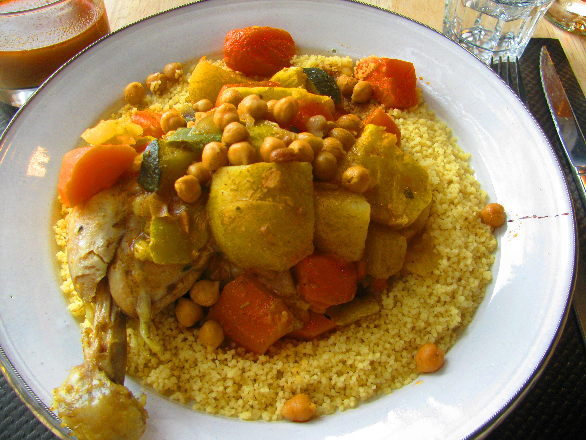

Couscous

Ingrédients
- Pour la semoule :
- 500 g de semoule moyenne de couscous
- 2 c. à soupe d’huile d’olive
- 1 c. à café de sel
- Eau (pour l’humidifier)
- Pour le bouillon
- 500 g de viande (agneau, poulet ou bœuf)
- 2 courgettes
- 2 carottes
- 2 navets
- 1 oignon
- 1 tomate
- 1 petite boîte de pois chiches (ou trempés la veille)
- 1 c. à soupe de concentré de tomate
- 1 c. à café de paprika
- 1/2 c. à café de ras el hanout
- Sel, poivre
- Huile
Ustensiles
- Un couscoussier (ou une marmite + passoire fine)
- Une grande bassine ou saladier pour la semoule
- Une cuillère en bois
- Un couteau et une planche à découper
Étapes
- réparation des légumes et de la viande : :
- Épluche et coupe les légumes en gros morceaux.
- Émince l’oignon.
- Coupe la viande en morceaux.
- Cuisson du bouillon :
- Dans la marmite du couscoussier, fais revenir l’oignon avec un peu d’huile.
- Ajoute la viande, les épices, le concentré de tomate et la tomate râpée.
- Laisse revenir quelques minutes.
- Ajoute les légumes (sauf courgettes) et les pois chiches.
- Couvre d’eau et laisse cuire à feu moyen pendant 30 à 40 min.
- Ajoute les courgettes en fin de cuisson.
- Préparation de la semoule :
- Mets la semoule dans un grand plat, ajoute un peu d’eau salée et l’huile.
- Mélange avec les mains pour bien séparer les grains.
- Mets la semoule dans le haut du couscoussier et laisse cuire à la vapeur 20 min.
- Verse-la dans le plat, arrose d’un peu d’eau, égrène avec une fourchette ou les mains.
- Répète l’opération 2 fois (3 cuissons vapeur au total).
- Finition :
- Dispose la semoule dans un grand plat.
- Creuse un puits au centre et verse un peu de bouillon.
- Dispose les légumes et la viande par-dessus.
- Sers chaud avec le reste du bouillon à part.